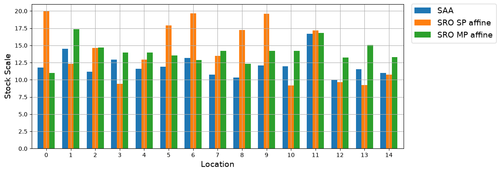

Adaptive Distributionally Robust Lot-Sizing#
In this example, we will use RSOME to solve the lot-sizing problem discussed in [BSS22]. This problem was formulated as a two-stage robust in Adaptive Robust Lot-Sizing, and here we will adopt the same setting, where a capacitated network with \(N\) locations is considered, and each location \(i\) has a random demand \(d_i\). The demand is supplied by the existing local stock \(x_i\) or by transporting an amount \(y_{ij}\) of units from another location \(j\), which is determined after the demand is realized. Such a lot-sizing problem is formulate it as the following two-stage distributionally robust model to minimize the worst-case expected total cost:
where the recourse problem \(Q(\pmb{x}, \pmb{d})\) is written as
In the following numerical studies, parameters are configured similar to Adaptive Robust Lot-Sizing: there are \(N=15\) locations and their coordinates are generated uniformly at random from \([0, 10]^2\). The cost of each local stock is \(c_i=20\), and the shifting cost \(t_{ij}\) is calculated as the Euclidean distance between store \(i\) and store \(j\). The stock capacity \(K_i\) for at all locations are set to be \(20\) units, and the capacity of product shifting is \(b_{ij}=K/(n-1)u_{ij}\), where \(u_{ij}\) are i.i.d. random variables generated from a standard uniform distribution. These parameters are defined in the code below.
import numpy as np
N = 15 # the total number of locations
c = 20 * np.ones(N) # the storage cost at each location
K = 20 * np.ones(N) # The maximum stock capacity
np.random.seed(1)
xy = 10*np.random.rand(2, N) # randomly generated locations in a 2D space
t = ((xy[[0]] - xy[[0]].T) ** 2 +
(xy[[1]] - xy[[1]].T) ** 2) ** 0.5 # the shifting costs as the Euclidean distances
b = K/(N-1) * np.random.rand(N, N) # the capacity of product shifting
The empirical distribution of the random demand \(\tilde{\pmb{d}}\) is represented by a sample dataset of \(S=16\) records generated uniformly at random from \([0, d^{\max}]^N\), where \(d^{\max}=20\).
dmax = 20
S = 16
ds = dmax * np.random.rand(S, N)
Sample Average Approximation#
We firstly formulate the model in a sample average approximation (SAA) approach, where \(\mathcal{F}\) is a singleton set containing only the empirical distribution:
where \(\hat{\pmb{d}}_s\) is the \(s\)th sample of the empirical distribution. Notice that in the SAA model, the wait-and-see decision \(y_{ij}\) adapts to each sample record, hence the adaptation rule is specified as \(y_{ij}\in\mathcal{A}(\{\{1\}, \{2\}, ..., \{S\}\})\). Such a model is formulated and solved by the following code.
from rsome import dro, E
model = dro.Model(S)
d = model.rvar(N)
fset = model.ambiguity()
for s in range(S):
fset[s].suppset(d == ds[s])
pr = model.p
fset.probset(pr == 1/S)
x = model.dvar(N)
y = model.dvar((N, N))
y.adapt(*range(S))
model.minsup(c@x + E((t*y).sum()), forall=fset)
model.st(y.sum(axis=0) - y.sum(axis=1) + x >= d)
model.st(0 <= y, y <= b)
model.st(0 <= x, x <= K)
model.solve('copt')
Being solved by COPT 8.0.5...
Solution status: 1
Running time: 0.0657s
After the model is solved, the solution is saved as a variable named x_saa, and the minimum objective value is printed as follows.
x_saa = x.get()
print(f'Objective value: {model.get():.4f}')
Objective value: 3740.4456
Sample Robust Optimization with Single-Policy Approximation#
Now we formulate the lot-sizing problem as a two-stage sample robust optimization model introduced in [BSS22], where the ambiguity set is written as
where the scenario-wise support is a Euclidean norm with a radius of \(\epsilon\) around the empirical data \(\hat{\pmb{d}}_s\). We first use a single-policy affine adaptation (SP affine) \(y_{ij}\in\overline{\mathcal{A}}(\{\{1, 2, ..., S\}\}, [N])\) to approximate the wait-and-see decision, which implies that \(y_{ij}\) follows an affine function of the random variable \(\pmb{d}\) across all samples. Suppose that the ambiguity set parameter \(\epsilon=10S^{-1/10}\).
epsilon = 10*S**(-1/10)
The sample robust optimization model is then solved by the code below.
from rsome import dro, E
import rsome as rso
model = dro.Model(S)
d = model.rvar(N)
fset = model.ambiguity()
for s in range(S):
fset[s].suppset(rso.norm(d - ds[s]) <= epsilon)
pr = model.p
fset.probset(pr == 1/S)
x = model.dvar(N)
y = model.dvar((N, N))
y.adapt(d)
model.minsup(c@x + E((t*y).sum()), forall=fset)
model.st(y.sum(axis=0) - y.sum(axis=1) + x >= d)
model.st(0 <= y, y <= b)
model.st(0 <= x, x <= K)
model.solve('copt')
Being solved by COPT 8.0.5...
Solution status: 1
Running time: 2.6954s
The solution is saved as a variable named x_srsp, and the minimum objective value is printed as follows.
x_srsp = x.get()
print(f'Objective value: {model.get():.4f}')
Objective value: 4464.2234
Sample Robust Optimization with Multiple-Policy Approximation#
The SP affine approximation above can be extended to a multiple-policy affine adaptation (MP affine) version, where the wait-and-see decision \(y_ij\) follows affine functions of the random demand \(\pmb{d}\), and coefficients of these functions may vary under different sample realizations. In other words, \(y_{ij} \in \overline{\mathcal{A}}(\{\{1\}, \{2\}, ..., \{S\}\}, [N])\). The code is slightly changed as follows.
from rsome import dro, E
import rsome as rso
model = dro.Model(S) # define a model
d = model.rvar(N)
fset = model.ambiguity()
for s in range(S):
fset[s].suppset(rso.norm(d - ds[s]) <= epsilon)
pr = model.p
fset.probset(pr == 1/S)
x = model.dvar(N) # here-and-now location decisions
y = model.dvar((N, N)) # wait-and-see transportation decisions
y.adapt(*range(S))
y.adapt(d)
model.minsup(c@x + E((t*y).sum()), forall=fset)
model.st(y.sum(axis=0) - y.sum(axis=1) + x >= d)
model.st(y >= 0)
model.st(0 <= x, x <= K)
model.solve('copt')
Being solved by COPT 8.0.5...
Solution status: 1
Running time: 0.7383s
x_srmp = x.get()
print(f'Objective value: {model.get():.4f}')
Objective value: 4343.6864
Visualization of the Optimal Decisions#
The optimal decisions yielded from the three models above are visualized in the following figure.
import pandas as pd
import matplotlib.pyplot as plt
fig, axes = plt.subplots(1, 1, figsize=(11.5, 4.5))
results = pd.DataFrame({'SAA': x_saa,
'SRO SP affine': x_srsp,
'SRO MP affine': x_srmp})
results.plot(kind='bar', width=0.7, ax=axes)
plt.xticks(rotation=0)
plt.xlabel('Location', fontsize=14)
plt.ylabel('Stock Scale', fontsize=14)
plt.legend(bbox_to_anchor=(1.01, 1.03), fontsize=14)
plt.grid()
plt.show()

Reference